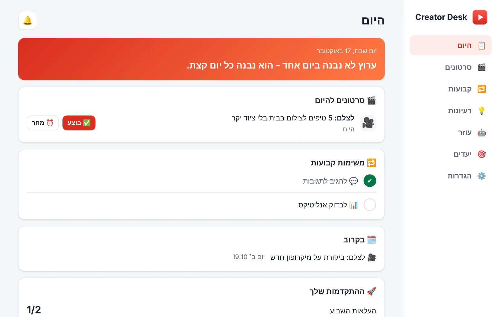
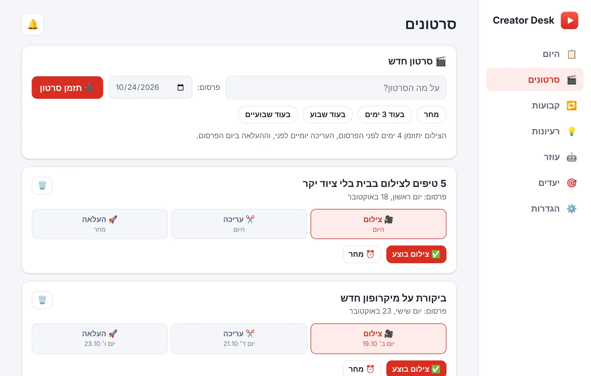
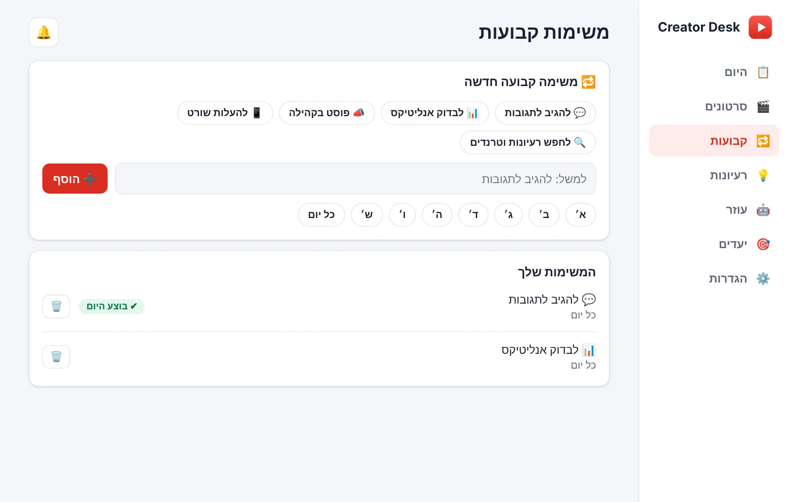
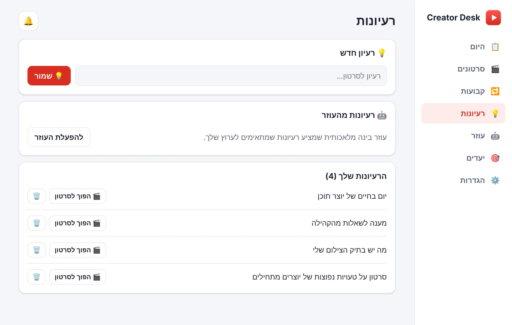
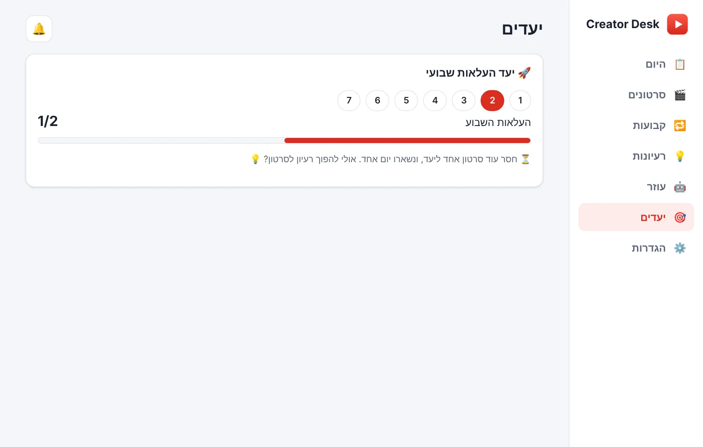

תזמון סרטונים
נותנים שם ותאריך פרסום, והאפליקציה מתזמנת אחורה: צילום, עריכה והעלאה. כל שלב מסומן בלחיצה.
Creator Desk מתזמנת לכל סרטון צילום, עריכה והעלאה, מזכירה בזמן ודוחפת אותך להמשיך. בלי הרשמה, והנתונים נשארים אצלך במחשב.
ל-Windows ול-Mac · הקוד פתוח לעיון ב-GitHub

כל מה שיוצר צריך כדי להיות עקבי, בלי גיליונות ובלי לזכור הכול בראש.
נותנים שם ותאריך פרסום, והאפליקציה מתזמנת אחורה: צילום, עריכה והעלאה. כל שלב מסומן בלחיצה.
סיכום בוקר עם מה שצריך לעשות היום, וצ'ק-אין בערב על מה שנשאר פתוח. כחלון קופץ במחשב.
משפט יומי, חגיגה על כל העלאה, יעד שבועי, רצף שבועות ודחיפה עדינה כשמפגרים.
כל רעיון נשמר בשנייה, ובלחיצה אחת הופך לסרטון מתוזמן.
אופציונלי: נתוני הערוץ בכל בוקר, תיקייה בדרייב לכל סרטון וגיבוי יומי. מתחברים לחשבון גוגל מתוך האפליקציה.
אופציונלי: צ'אט שמכיר את הערוץ שלך ומציע רעיונות וכותרות. עובד חינם עם מפתח של Gemini מגוגל, או עם Claude בתשלום לפי שימוש.
שלושה צעדים, ואחר כך האפליקציה עושה את החלק של הזכרון.
כותבים שם לסרטון ובוחרים תאריך פרסום. אפשר גם להפוך רעיון שמור לסרטון.
האפליקציה מתזמנת את השלבים, ומזכירה בבוקר ובערב מה צריך לעשות.
לוחצים "בוצע", ורואים את ההתקדמות מול היעד השבועי. בהעלאה מחכה חגיגה קטנה.
המסכים הם מהאפליקציה עצמה, עם נתוני דוגמה. האפליקציה מתאימה את עצמה אוטומטית למצב בהיר או כהה.




האפליקציה רצה על המחשב שלך ולא צריכה ממך חשבון.
האפליקציה חינמית, וגם עוזר ה-AI יכול להיות חינמי: אפשר להשתמש במפתח חינם של Gemini מגוגל (עם מגבלה יומית). מי שמעדיף את Claude משלם ל-Anthropic לפי שימוש, בדרך כלל כמה סנטים לתשובה. העוזר אופציונלי לגמרי.
לא, האפליקציה צריכה להיות פתוחה. אפשר למזער אותה, או להפעיל בהגדרות "הפעלה אוטומטית עם המחשב", והיא תיפתח ממוזערת בכל כניסה.
על Windows ועל Mac. אפשר גם להריץ מהקוד על Linux. ההוראות בעמוד ההורדה.
לא. הסמל הוא "נגן" אדום מקורי בסגנון ערוץ וידאו, כי הלוגו של יוטיוב הוא סימן מסחרי רשום. אפשר להחליף אותו בתמונה של הערוץ שלך.
כן, עם יכולות דומות לתזכורות בטלפון. ההסבר במדריך.